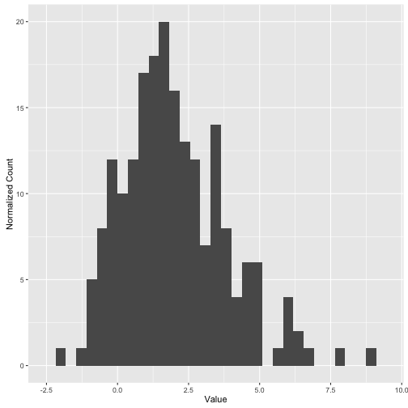
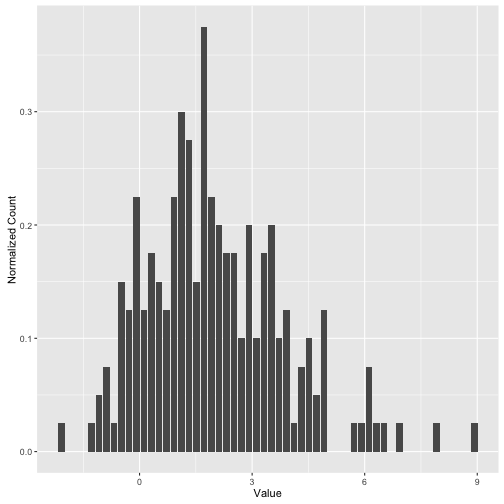
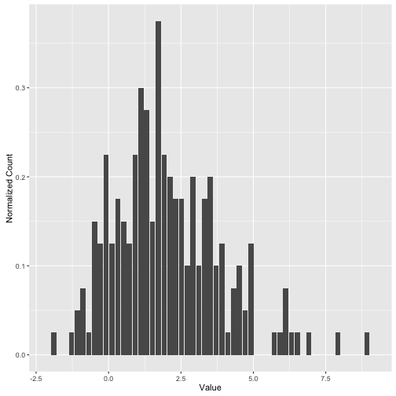
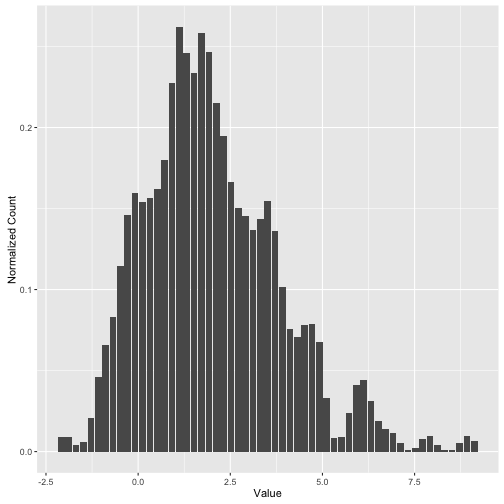
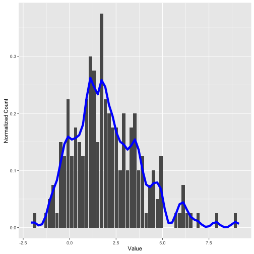
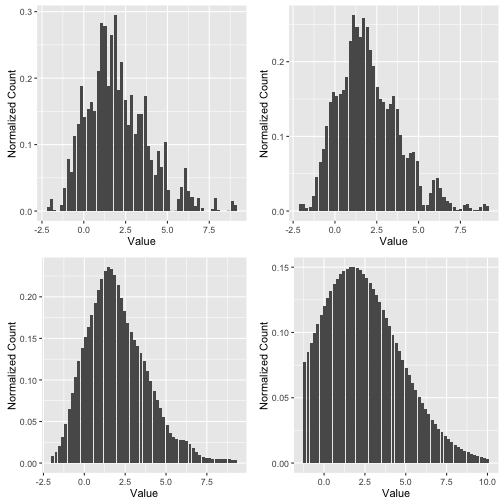

Estimating Probablity Densities
The other day I was reading Parzen's density estimators in Bishop. Density estimators are a non-parametric way of estimating the underlying probability distributions, that might have generated the data that you are handed over. Parametric methods consist of assuming a distribution, and then estimating the parameters of the distribution, that are most likely to have generated that data (MLE/MAP etc.). Nonparametric estimations however, make no such assumptions. The simplest non-parametric estimation? You have probably used it several times, without realizing it. Its the humble histogram!
Visualizing data: Histograms
When we are given simple numerical data, I mean simple 1 Dimensional data, one of the first things we do is to look at how the data is distributed i.e. find its probability distribution. The simplest thing we can do is a histogram, but it might not be the best we can do. So, lets generate some data that comes from a mixture of two gaussians. We will look at the most hurriedly put together histogram and then refine it.
set.seed(667)
hist_data <- c( rnorm(100,1,1), rnorm(100,3,2) )
hist_df <- data.frame(values=hist_data)
library(ggplot2)
p_hist <- ggplot(data=hist_df) + geom_bar(aes(x=values),stat="bin") +
labs(x="Value",y="Normalized Count")
print(p_hist)
## `stat_bin()` using `bins = 30`. Pick better value with `binwidth`.

So, one thing needs to be corrected first. This is not a probability density function(pdf) because the condition for a pdf is explicitly: $$ \int_{-\infty}^{\infty} p(x) = 1 $$
So, we need to normalize this histogram. But to normalize, we explicitly need to bin width. Let us assume a bin width of $w$, and lets say we have N data points. In our case, N is 200. So, What is the total area under the curve.For k bins, and a count of $C_i$ for each bin, we can write the area A as: $$ A = \sum_{i=1}^{i=k}C_iw$$ $$ A = w\sum_{i=1}^{i=k}C_i = wN $$
Therefore the normalization factor has to be w*N, or the product of bin width and the total number of points. Let us now explicity set a bin width and normalize:
w <-0.2
break_vec <- seq(from = min(hist_data)-w, to= max(hist_data)+w, by = w)
h1 <- hist(hist_data, breaks= break_vec, plot=F)
nhist_df <- data.frame(count=h1$counts, xval = h1$mids)
nhist_df$count <- nhist_df$count/(w*length(hist_data))
print(paste("Area under the curve is",sum(nhist_df$count*w)))
## [1] "Area under the curve is 1"
p_norm <- ggplot(nhist_df) + geom_bar(aes(x=xval, y=count), stat="identity") +
labs(x="Value",y="Normalized Count")
print(p_norm)

That straightens out the issue about area under the curve. However, histograms aren't quite what we want. Why? because histograms show jumps which are not characateristic of the data but more characteristic of the finite sample size. We are looking to find the distribution that generated this data, and get around the finite sample size effect.
Density Estimators
To understand density estimators, let us first recreate our previous figure. How? we will not depend this time on R's built-in hist function, but make our own. Sounds like a rather fruitless exercise in coding up something rather trivial? Well, not quite. We will shortly see why.
tophat_kernel <-function(x, x_n, width)
{
if( abs(x-x_n)<width/2. )
return(1/width)
else
return(0)
}
construct_hist <-function(hist_data, break_vec,width, kernel_function)
{
mids_vec <- break_vec + width/2
count_vec <- rep(0, length(mids_vec))
for( i in 1:length(count_vec))
{
for(j in 1:length(hist_data))
{
count_vec[i] <- count_vec[i] + kernel_function(hist_data[j],mids_vec[i], width)
}
}
nhist_df <- data.frame(count=count_vec, xval = mids_vec)
nhist_df$count <- nhist_df$count/(length(hist_data))
return(nhist_df)
}
derived_nhist_df <-construct_hist(hist_data, break_vec, w, tophat_kernel)
p_norm2 <- ggplot(derived_nhist_df) + geom_bar(aes(x=xval, y=count), stat="identity")+
labs(x="Value",y="Normalized Count")
print(p_norm2)

Okay, so we have now introduced this double for loop, and made things run a lot slower. Why did we do this? to understand the thinking behind the histogram method of estimation. What we are trying to do here, is look at each of these bins (outer for loop), and for a single bin ask, for each data point (inner for loop) whether the data point contributes to the bin or not. By contribution what we mean here, is whether the data point falls in the width of the bin we have defined. Now, notice that the sudden discontinuities arise from the way we are defining the contribution of a data point. Its a binary decision, either a data point contributes or not. However, now that we have defined this framework, we are free to change this form of the contribution. We can, for example, think of a Gaussian, where the contribution is not 0/1 but decreases exponentially from the center of the bin. This is the basic argument of density estimation. Now, we need not stop at the Gaussian kernel, but substitute it with a exponential, cosine or any other kernel that makes sense. The Gaussian is the most common kernel, so let us see what happens when we shift to it.
gaussian_kernel <- function(x,x_n, width)
{
norm_val = ( 1./sqrt(2.*pi*width*width) )*exp(-(x-x_n)^2/(2*width^2))
return(norm_val)
}
gauss_hist_df <-construct_hist(hist_data, break_vec,w, gaussian_kernel)
p_gauss <- ggplot(gauss_hist_df) + geom_bar(aes(x=xval, y=count), stat="identity") +
labs(x="Value",y="Normalized Count")
print(p_gauss)
 On comparing the histogram(i.e. the tophat kernel with the Gaussian one) we can see that the Gaussian has done a nice job of smoothing the kinks in the histogram.
p_comp <- ggplot() + geom_bar(data = derived_nhist_df, aes(x=xval, y=count), stat="identity") +
geom_line(data=gauss_hist_df, aes(x=xval,y=count), colour="blue", size=2) +
labs(x="Value",y="Normalized Count")
print(p_comp)

As you can see we have managed to consirably smooth the probability density, and now we can clearly see the outline of the more tightly distributed Gaussian, centered around 1. Why is this practically important? This gets rid of artificial kinks in the probability density. Any estimations, based on the probability density, which assumes a nicely behaved function can now be applied more easily. For example, a derivative operator will be much more well behaved, and not show the sudden jumps due to artificial kinks in the histogram.
How well behaved this function is, is highly dependent on the bin width we choose, just like the histogram method is. We have overlooked this question till now. We will leave the reader with an illustration of how the histogram changes with bin width.
gauss_hist_w1 <-construct_hist(hist_data, break_vec,0.1, gaussian_kernel)
p_1 <- ggplot(gauss_hist_w1) + geom_bar(aes(x=xval, y=count), stat="identity") +
labs(x="Value",y="Normalized Count")
gauss_hist_w3 <-construct_hist(hist_data, break_vec,0.5, gaussian_kernel)
p_3 <- ggplot(gauss_hist_w3) + geom_bar(aes(x=xval, y=count), stat="identity") +
labs(x="Value",y="Normalized Count")
gauss_hist_w4 <-construct_hist(hist_data, break_vec,2, gaussian_kernel)
p_4 <- ggplot(gauss_hist_w4) + geom_bar(aes(x=xval, y=count), stat="identity") +
labs(x="Value",y="Normalized Count")
library(gridExtra)
grid.arrange(p_1,p_gauss, p_3,p_4, ncol=2)
